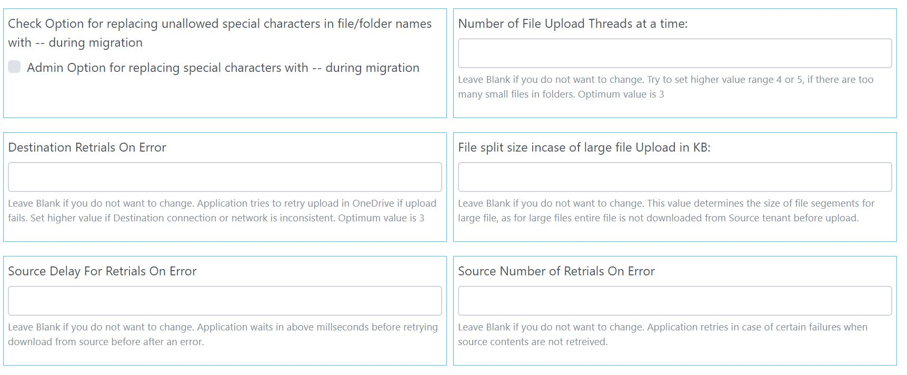

Admin configurations are done for two purpose.
This is covered in detail in Authentication section of this help.
Select Source for migration here and options for JWT or OAuth migration. Steps to create JSON files are covered in detail in Authentication section of this help.
Upload JSON file for JWT Authentication
For Box as if OAuth Settings are needed do not check JWT option as in diagram below. Box OAuth settings is used by default.
If Box JWT Option is used, upload of JSON file is required for this step and APP ID from JSON file needs to be configured in Source Box Tenant. This is discussed in detail in authentication section.
OneDrive only allows OAuth. Follow Onetime Configuraton to get Client ID and Client Secret to update here.
Follow instruction on screen. Leave blank or as-is if you do not want to update.
